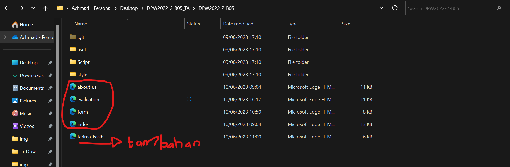
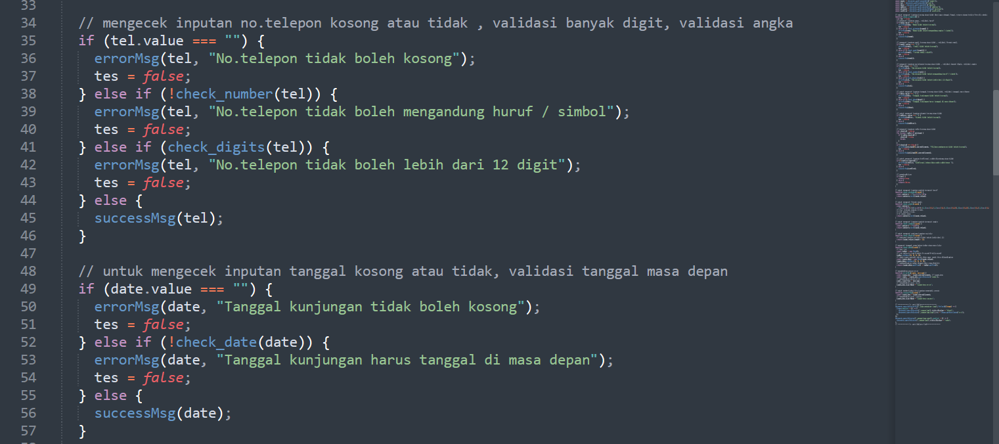

| No |
Pernyataan |
Tampilan |
Keterangan |
| 1. |
Kelengkapan section |
|
Website kami menggunakan 5 section, yaitu : Header, Menu, Content, Sidebar, dan Footer. Untuk penjelasan masing masing sectionnya yaitu :
- Header dan Menu : terdapat dibagian atas halaman web yang memiliki logo navbar yang terdiri atas menu berisi Home, Form, Evaluation, dan About Us.
- Content :
- Content halaman pertama berisi penjelasan meliputi : Sejarah borobudur, Rekomendasi Destinasi Kunjungan, Galery / Foto Candi, dan Event / acara mendatang.
- Sidebar : Berada di sebelah kanan content dengan posisi menempel.
- Footer : Berada di bagian bawah halaman web yang berisi ringkasan isi website, lokasi, alamat dan Sosial media
|
| 2. |
Kelengkapan jumlah halaman |
   |
Jumlah halaman dalam website kami ada 5 yang meliputi :
- Homepage : Pengantar mengenai gambaran isi Candi Borobudur
- Form : Berisi formulir masukkan untuk pemesanan tiket kunjungan
- Evaluation : Berisi evaluasi halaman web yang sudah dibuat
- About Us : berisi identitas pembuat Website dan sumber sumber yang digunakan dalam pembuatan website
- Terimakasih: berisikan kembalian ketika kita mensubmit pemesanan tiket
|
| 3. |
Kesesuaian nama file untuk Halaman utama ("Homepage") |
|
Penamaan file untuk halaman Homepage telah kami sesuaikan dengan spesifikasi tugas Aplikasi |
| 4. |
Kelengkapan penggunaan elemen HTML form yang digunakan sebagai field masukan |
|
Dalam pembuatan form, website kami menggunakan elemen HTML form antara lain :
- Tag Form untuk memasukkan inputan data yang sudah diisikan oleh user dan selanjutnya akan dikirim kehalaman web yang dituju sesuai nilai pada atribut action
- Tag label berisi subjudul field masukkan pada form
- Tag input digunakan membuat field masukkan sebagai tempat user mengisi data
|
| 5. |
Kelengkapan penerapan (jenis) validasi form |
 |
Validasi untuk setiap data yang diisikan oleh user pada halaman Formulir menggunakan 6 jenis :
- Masukkan wajib
- Masukkan format alfabet untuk pengisian nama
- Masukkan format numerik untuk pengisian nomor telephone
- Masukkan format email untuk pengisian email
- Masukkan kesesuain tanggal untuk pengisian tanggal di masa yang akan datang
- Masukkan dengan panjang digit tertentu untuk panjang digit nomor telephone
|
| 6. |
Kesesuaian pesan error validasi form |
|
Website kami menggunakan pesan error message yang akan tampil dibagian kanan bawah field masukkan apabila data yang diisikan oleh user tidak sesuai dengan format masukkan pada JavaScript. Sehingga jika masih terdapat kesalahan penginputan data maka data tersebut tidak dapat disubmit atau terkirim. |
| 7. |
Konsistensi desain antar halaman |
|
Desain antar halaman pada halaman 1 sampai 4 sudah konsisten mulai dari posisi section, ukuran masing masing section, backgorund halaman web, dll. |
| 8. |
Kesesuaian website terhadap tema |
|
Website kami bertemakan Industri pariwisata sektor atraksi sehingga Website Candi Borobudur ini sangat cocok untuk dikembangkan karena merupakan salah satu sarana agar pengunjung atau wisatawan dari dalam negeri maupun mancanegara dapat menggunakan website ini untuk pemesanan tiket kunjungan menuju Candi, sebagai cara untuk mengeksplore salah satu keajaiban dunia. |